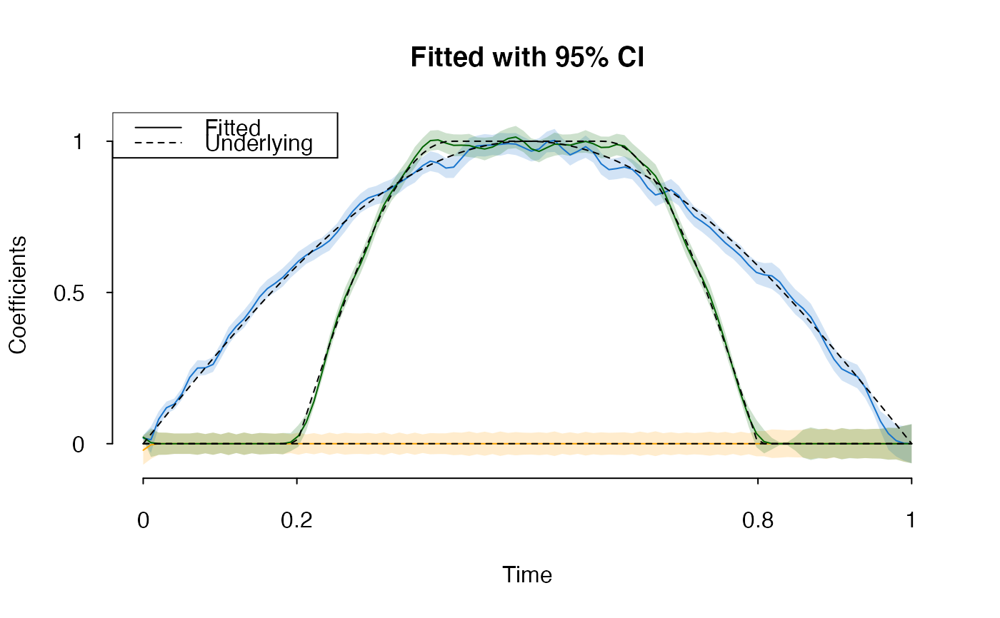

Function-on-scalar regression model, denote \(n\) as total number of observations, \(p\) the number of coefficients, \(K\) as the number of B-splines, \(T\) as total time points.
spfda( Y, X, lambda, time = seq(0, 1, length.out = ncol(Y)), nsp = "auto", ord = 4, alpha = 0.5, W = NULL, init = NULL, max_iter = 50, inner_iter = 5, CI = FALSE, ... )
| Y | Numeric \(n \times T\) matrix, response function. |
|---|---|
| X | Numeric \(n \times p\) matrix, design matrix |
| lambda | Regularization parameter \(\gamma\) |
| time | Time domain, numerical length of \(T\) |
| nsp | Integer or 'auto', number of B-splines \(K\); default is 'auto' |
| ord | B-spline order, default is |
| alpha | Bridge parameter \(\alpha\), default is |
| W | A \(T \times T\) weight matrix or |
| init | Initial \(\gamma\); default is |
| max_iter | Number of outer iterations |
| inner_iter | Number of \(ADMM\) iterations (inner steps) |
| CI | Logical, whether to calculate theoretical confidence intervals |
| ... | Ignored |
A spfda.model object (environment) with following elements:
B-spline basis functions used
Root Mean Square Error ('RMSE')
Whether confidence intervals are calculated
B-spline coefficient \(\gamma_{p \times K}\)
Function to generate B-splines given time points
Number of B-spline basis functions
B-spline knots used to fit the model
Function to predict responses \(\beta(t)\) given new
X and/or time points
A list of raw variables
This function implements "Functional Group Bridge for Simultaneous
Regression and Support Estimation" (https://arxiv.org/abs/2006.10163).
The model estimates functional coefficients \(\beta(t)\) under model
\[y(t) = X\beta(t) + \epsilon(t)\] with B-spline basis expansion
\[\beta(t) = \gamma B(t) + R(t), \] where \( R(t) \) is B-spline
approximation error. The objective function
\[
\left\| (Y-X\gamma B)W \right\|_{2}^{2} + \sum_{j,m}
\left\| \gamma_{j}^{T}\mathbf{1}(B^{t} > 0) \right\|_{1}^{\alpha}.
\]
The input response variable is a matrix. If \(y_{i}(t)\) are observed
at different time points, please interpolate (e.g.
kernel) before feeding in.
#> [1] 102.312plot(fit, col = c("orange", "dodgerblue3", "darkgreen"), main = "Fitted with 95% CI", aty = c(0, 0.5, 1), atx = c(0,0.2,0.8,1))#> Model: function-on-scalar with group-bridge penalty #> Log-lik: -50045.25 (df=236) #> E-BIC: 102.312 #> RMSE : 1.069308 #> Parameters: #> K: 50 #> alpha: 0.5 #> lambda: 5#> [,1] [,2] [,3] [,4] [,5] #> [1,] -0.02145274 -0.003481437 -1.612242e-05 -1.453774e-08 -2.369665e-08 #> [2,] 0.01875991 0.013127875 8.105367e-02 1.189719e-01 1.308836e-01 #> [3,] 0.02159346 0.003504274 1.622349e-05 0.000000e+00 0.000000e+00 #> [,6] [,7] [,8] [,9] [,10] #> [1,] -2.242419e-08 -1.228646e-08 -3.397887e-09 -2.983056e-10 0.0000000 #> [2,] 1.655075e-01 2.195071e-01 2.502454e-01 2.508474e-01 0.2621357 #> [3,] 0.000000e+00 0.000000e+00 0.000000e+00 0.000000e+00 0.0000000 #> [,11] [,12] [,13] [,14] [,15] [,16] #> [1,] 0.0000000 0.0000000 0.0000000 0.000000 0.000000e+00 0.000000e+00 #> [2,] 0.3062283 0.3563826 0.3881487 0.412691 4.470016e-01 4.853375e-01 #> [3,] 0.0000000 0.0000000 0.0000000 0.000000 -3.038062e-09 -3.460543e-08 #> [,17] [,18] [,19] [,20] [,21] #> [1,] 0.000000e+00 0.000000e+00 0.0000000000 0.000000000 -5.392835e-11 #> [2,] 5.128187e-01 5.302719e-01 0.5504198846 0.577309929 6.033283e-01 #> [3,] -1.251302e-07 -2.283768e-07 0.0001193991 0.005129434 2.582779e-02 #> [,22] [,23] [,24] [,25] [,26] #> [1,] -1.164852e-08 -7.177864e-08 -1.951016e-07 -2.931190e-07 -2.693944e-07 #> [2,] 6.231759e-01 6.384588e-01 6.524016e-01 6.709654e-01 6.995649e-01 #> [3,] 7.034520e-02 1.399606e-01 2.316536e-01 3.289133e-01 4.138321e-01 #> [,27] [,28] [,29] [,30] [,31] #> [1,] -1.594212e-07 -5.195551e-08 5.177962e-08 2.156075e-07 4.058967e-07 #> [2,] 7.345194e-01 7.682250e-01 7.953528e-01 8.124735e-01 8.214013e-01 #> [3,] 4.830996e-01 5.402844e-01 5.940160e-01 6.564664e-01 7.270962e-01 #> [,32] [,33] [,34] [,35] [,36] [,37] #> [1,] 4.606397e-07 3.109240e-07 1.147576e-07 1.862332e-08 8.621908e-11 0.0000000 #> [2,] 8.306852e-01 8.455205e-01 8.626133e-01 8.789186e-01 8.969819e-01 0.9190002 #> [3,] 7.887667e-01 8.322404e-01 8.683902e-01 9.075548e-01 9.470523e-01 0.9808341 #> [,38] [,39] [,40] [,41] [,42] [,43] [,44] #> [1,] 0.0000000 0.0000000 0.0000000 0.0000000 0.0000000 0.0000000 0.0000000 #> [2,] 0.9342636 0.9280044 0.9112685 0.9143587 0.9433897 0.9724418 0.9843894 #> [3,] 1.0020283 1.0042420 0.9937679 0.9863787 0.9869456 0.9858813 0.9786767 #> [,45] [,46] [,47] [,48] [,49] [,50] #> [1,] 0.0000000 5.050353e-09 4.040283e-08 1.271586e-07 2.184181e-07 2.404008e-07 #> [2,] 0.9865114 9.876492e-01 9.896844e-01 9.921899e-01 9.905329e-01 9.791755e-01 #> [3,] 0.9743144 9.807503e-01 9.945345e-01 1.008918e+00 1.013845e+00 9.991330e-01 #> [,51] [,52] [,53] [,54] [,55] #> [1,] 1.730065e-07 3.834253e-08 -1.103511e-07 -1.810337e-07 -1.337078e-07 #> [2,] 9.672288e-01 9.744843e-01 9.975532e-01 1.002663e+00 9.763308e-01 #> [3,] 9.748964e-01 9.663509e-01 9.786409e-01 9.903658e-01 9.891936e-01 #> [,56] [,57] [,58] [,59] [,60] [,61] #> [1,] -5.031545e-08 -8.165392e-09 -3.780274e-11 0.0000000 0.0000000 0.0000000 #> [2,] 9.548894e-01 9.667905e-01 9.819998e-01 0.9630326 0.9254010 0.9061692 #> [3,] 9.869911e-01 9.938272e-01 9.994823e-01 0.9915872 0.9793747 0.9802529 #> [,62] [,63] [,64] [,65] [,66] [,67] [,68] #> [1,] 0.0000000 0.0000000 0.0000000 0.0000000 0.0000000 0.0000000 0.0000000 #> [2,] 0.9095755 0.9146913 0.9072600 0.8825834 0.8457711 0.8223959 0.8296099 #> [3,] 0.9891330 0.9840143 0.9595961 0.9328056 0.9123060 0.8850005 0.8390550 #> [,69] [,70] [,71] [,72] [,73] [,74] [,75] #> [1,] 0.0000000 0.0000000 0.0000000 0.0000000 0.0000000 0.0000000 0.0000000 #> [2,] 0.8398061 0.8200747 0.7810164 0.7510829 0.7341316 0.7152752 0.6892379 #> [3,] 0.7794628 0.7151707 0.6532529 0.5992714 0.5487181 0.4895203 0.4165679 #> [,76] [,77] [,78] [,79] [,80] [,81] #> [1,] 0.0000000 0.0000000 0.0000000 0.00000000 0.00000000 0.000000000 #> [2,] 0.6638412 0.6430232 0.6201012 0.59080920 0.56629808 0.558343665 #> [3,] 0.3340572 0.2473564 0.1630603 0.08854544 0.03364943 0.006685865 #> [,82] [,83] [,84] [,85] [,86] #> [1,] 0.0000000000 7.034556e-10 1.333960e-08 5.636541e-08 1.144292e-07 #> [2,] 0.5548571858 5.346052e-01 4.995197e-01 4.690048e-01 4.474165e-01 #> [3,] 0.0001560055 2.680903e-07 5.338170e-07 7.918310e-07 9.457500e-07 #> [,87] [,88] [,89] [,90] [,91] #> [1,] 1.281861e-07 7.691411e-08 3.265327e-08 5.440375e-08 9.880106e-08 #> [2,] 4.190034e-01 3.748817e-01 3.244933e-01 2.790974e-01 2.473030e-01 #> [3,] 8.685946e-07 5.423034e-07 1.964669e-07 3.188343e-08 1.476085e-10 #> [,92] [,93] [,94] [,95] [,96] #> [1,] 1.041337e-07 6.222883e-08 -1.091072e-08 -9.648417e-08 -1.742564e-07 #> [2,] 2.340650e-01 2.222284e-01 1.865684e-01 1.293420e-01 7.374490e-02 #> [3,] 0.000000e+00 0.000000e+00 0.000000e+00 0.000000e+00 0.000000e+00 #> [,97] [,98] [,99] [,100] #> [1,] -2.485214e-07 -3.550219e-07 -4.288264e-07 -1.756243e-07 #> [2,] 3.366351e-02 1.017311e-02 1.271599e-03 -2.457089e-07 #> [3,] 0.000000e+00 0.000000e+00 0.000000e+00 0.000000e+00